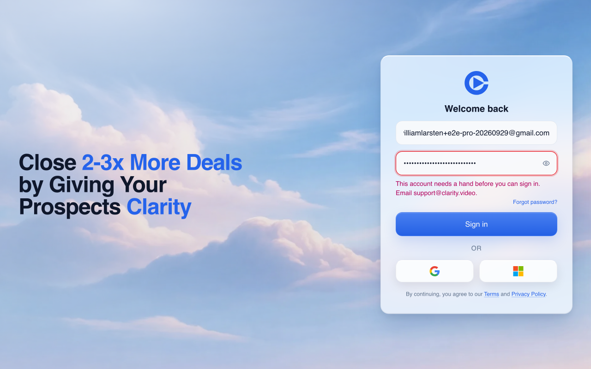
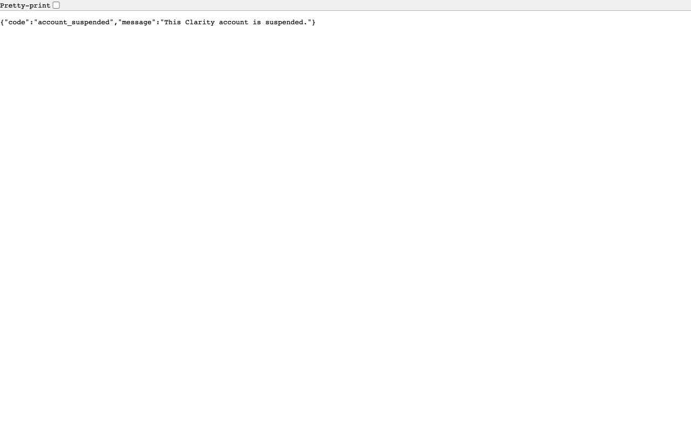

NOT VERIFIED in full. BLOCKED only for the configured-organization preview item. All executable checks passed. The preview drops the Boardroom organization setting. Fallback grants were verified live; organization-backed membership prevention is covered by tests.
Independent verification on 2026-11-02. Head e73dfaa3736967827b0ffb7d1ad6eba01ed3488d. PR 1632. Routing stays steer. William has not signed off. Nothing was merged or pushed to the PR branch.
| Check | Evidence |
|---|---|
| Preview identity | Doctor passed with an authenticated session and the requested head SHA. |
| Red to green | Merge base 11fdc02d22f43ab5249afc15d40ea5356dbd446c with the PR test file. 7 failed, 19 passed. Head has 26 passed. |
| Adjacent regressions | Suspension matrix, GoHighLevel sync and Boardroom offer suites. 3 files passed, 68 tests passed. |
| Suspended direct join | PR 1590 grants included access. PR 1632 returns the shared 403 and writes no grant or membership. |
| Suspended offer cookie | Password sign-in returns 403 and clears the offer cookie. No grant or membership. Browser shows a support message. |
| Normal redemption | Direct join and cookie sign-in each create an included grant. Rows read after each flow and removed afterwards. |
| Configured organization | BLOCKED live. The generated preview config drops BOARDROOM_ORGANIZATION_ID. Tests exercise the organization-backed grant and membership paths. Cloudflare Worker settings read was denied. |
| OAuth | Real provider not run, as specified in the brief. The matrix case “oauth returns the cookie offer refusal and cannot redeem a spent cookie after unsuspension” passes with a mocked provider. |
| Cleanup | Both preview accounts read back with suspended_at NULL, only the original complimentary grant, and no memberships. |
Sign in as the suspended mock Pro account and request /join/boardroom. The before environment is PR 1590, main plus a CSS token change, at head 2ea76ccb7c46a591359530a8e879272d6eb5869e. No production or staging writes.
BEFORE on PR 1590
HTTP 302, Location /home
New access_grants row
kind included, source offer:boardroom
organization_id null, payer_name Revenue Acceleration Boardroom
Membership rows []
AFTER on PR 1632
HTTP 403, X-Clarity-Access account-suspended, no Location
{"code":"account_suspended","message":"This Clarity account is suspended."}
No Boardroom grant. Membership rows [].
The brief assumed no organization setting means no grant. That is false. The implementation intentionally writes a payer-name grant without an organization. Live before and normal-account checks both confirmed it.
Signed out, visit /join/boardroom, then use the email and password form. The network records a 403 from /auth/password. The message gives a useful support address, but does not explicitly say “suspended.”

The API replay confirms the offer cookie expires with Max-Age=0. Pressing Sign in again in the browser sends a 200 response and reaches the account suspension wall. The account still cannot enter the app. William should review this difference between the first and second sign-in attempts.
The direct join URL shows raw JSON. This is the shared refusal requested by the issue, but is a rough browser experience.

All fixture writes targeted acct_workos_user_01M3PV8N4H36ZZPHGXFXWCQPM3 only. On each preview, set suspended_at to the run marker and later restored NULL. On PR 1590 the request inserted one Boardroom grant, which cleanup deleted. On PR 1632 normal direct join and normal cookie login each inserted one Boardroom grant, which cleanup deleted separately. An earlier PR 1632 cleanup DELETE matched zero rows. No membership writes occurred. Normal authentication also updates last_login_at; that login history was retained.
Requests, D1 reads and every explicit write · Merge-base failures · Head matrix · All focused head tests
Browser network evidence shows password 403 then 200. The only observed unrelated browser network failure was an aborted RUM request during navigation. No customer data was used. Waved through none.